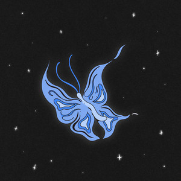

Dariana es una joven intérprete canadiense de padres venezolanos, cuyo interés por la música y el arte siempre se manifestó. Aunque ha desarrollado su talento de manera empírica, desde muy niña mostró su talento para la composición a través de las rimas y versos que anotaba en un cuaderno escolar, pero fue en la iglesia en donde realmente, tanto ella como su familia, fueron conscientes de su llamado.
Video más reciente
Discografía
¿Quién es Dariana?
OLAM

El mundo de Olam es su corazón, el mundo en el que ahora viviré.
Te invito a ser parte de una cultura donde el objetivo es inundarnos en la lluvia de su amor.
Conocer su corazón y dejar que influencie el nuestro.
-Dariana
Zomoz Música
Somos amantes de la música, especialmente de crear música que nos conecta con Dios. Somos 4 vocalistas que vivimos en lugares diferentes. Desde Argentina, México y Canadá. Somos diferentes pero nos une una sola fe. Esperamos que disfruten nuestra propuesta musical tanto como nosotros disfrutamos crearla.